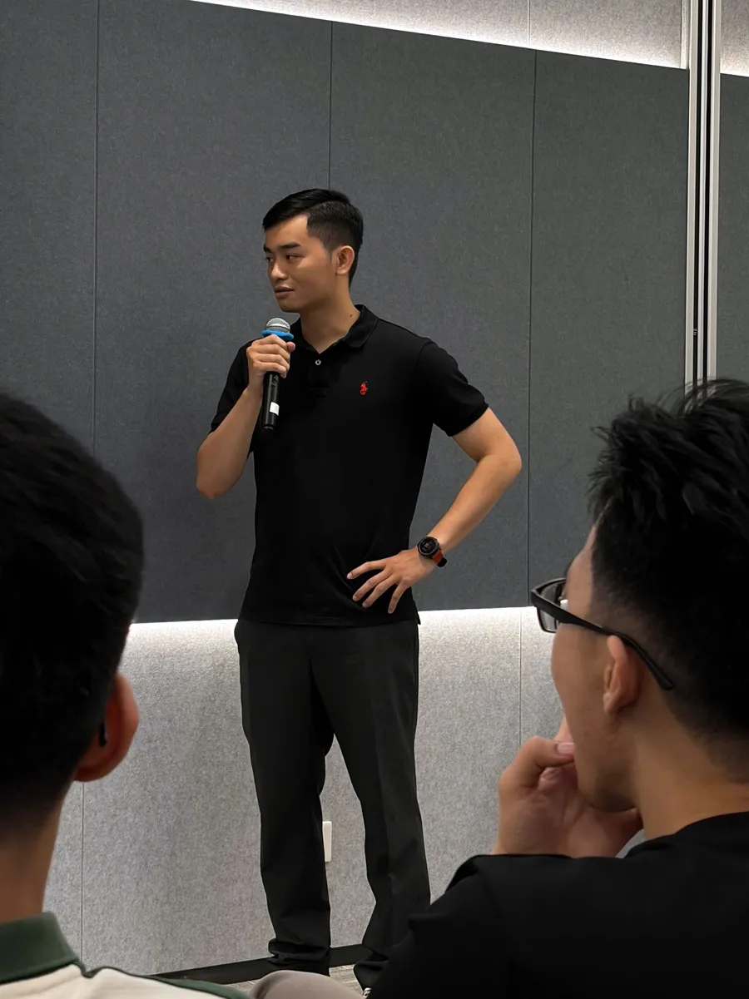
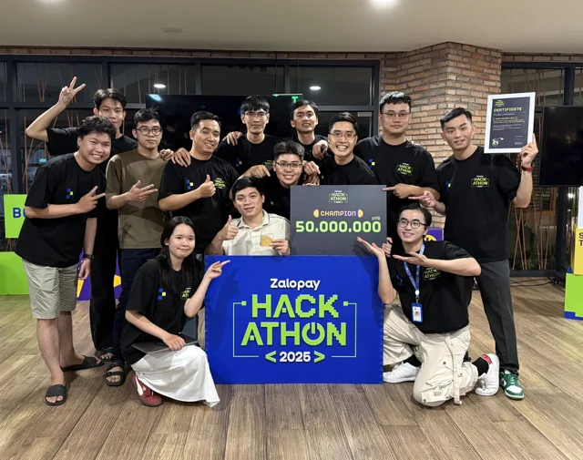
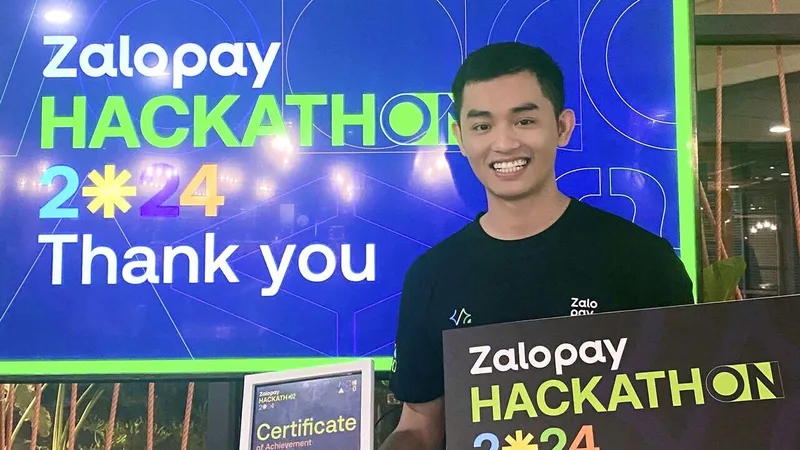
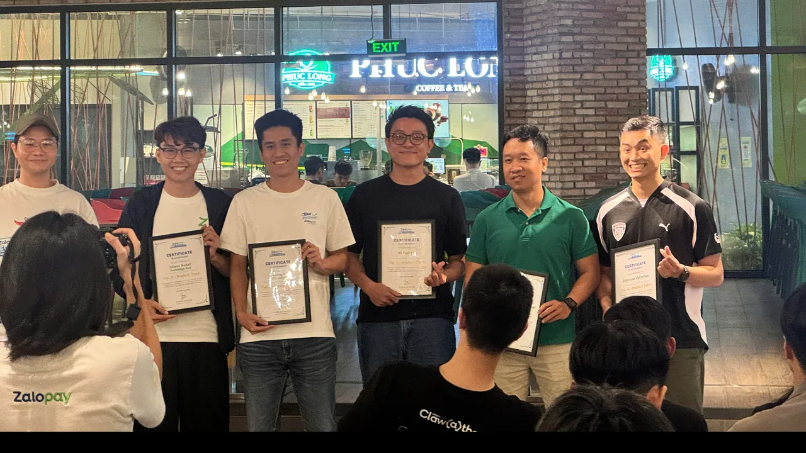
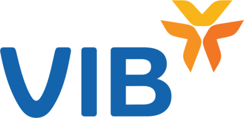
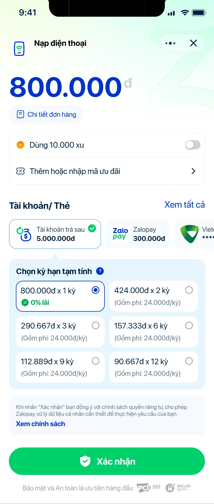
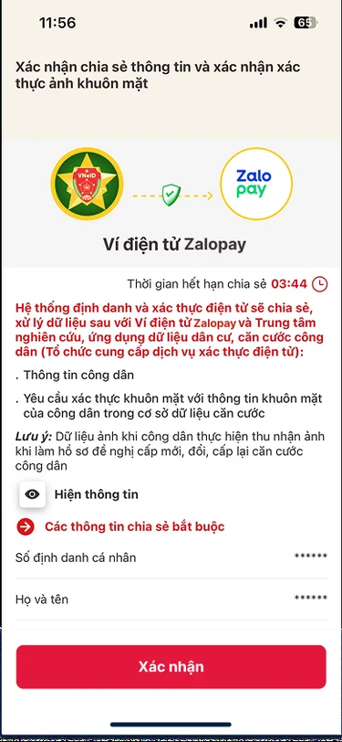
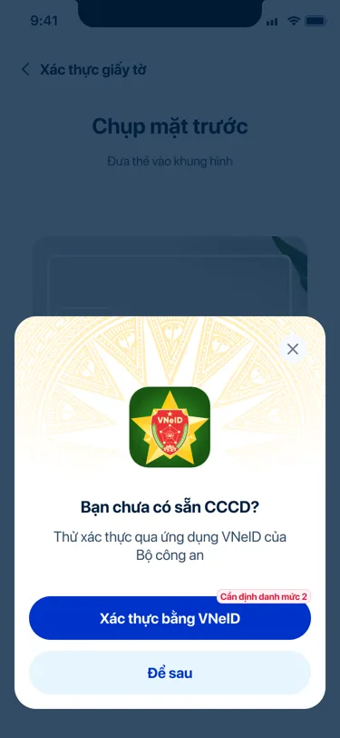
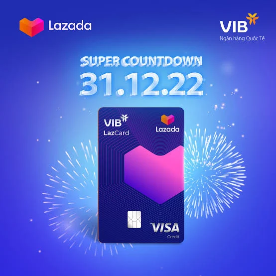

Senior Product Owner, Zalopay · Open to product roles in Singapore
I build the wallet inside the chat app Vietnam lives on.
I led the 12-person team behind Zalopay login and identity, and now own Buy Now Pay Later. Before that, two years at Lazada.

About
I studied marketing at Monash University in Melbourne, then spent two years at Lazada building bank partnerships and card products, first on the partnership side and then as a product manager.
In 2023 I joined Zalopay and have since worked in three regulated areas: merchant payments, digital identity, and now consumer lending, where I own Buy Now Pay Later. I work between engineering, risk, legal, compliance and lending partners, and I coach a junior product owner.
How I work
- Find the cause before choosing the fix. Peers rated me 4.5 out of 5 on “digs to the root cause before proposing”.
- Decide per segment. An average can hide a yes and a no.
- Plan the rollback before the rollout.
What I’m working on: making big calls faster, and saying no earlier.
Recognition
Top performance rating, every yearLazada Top2024 A2025 A2026 A“A: Excellent” is VNG’s top tier.
2025
Sao Khuê Award, Fintech
For pay on delivery. National IT award, VINASA.

2025
Zalopay Hackathon, Champion
Second title in a row.

2024
Zalopay Hackathon, Champion
Theme: ecosystem diversification.

2026
AI Exhibition, Top 5
Edge-case detection. Team lead.
2026
Security Contest, 3rd place
Team captain, team of two.
- MonashMelbourne · 2018–21
- Lazada2021–22
- Merchants2023
- Identity2025
- User Core2025–26
- Pay LaterNow
- SingaporeNext stop
- Partners I integrated with



Launches I led
Five launches, newest first.

Zalopay · Buy Now Pay Later · Product owner, leading a junior PO
Buy Now Pay Later, end to end, across lenders
Pay Later is credit inside the wallet. A bank or finance company lends the money; Zalopay owns the whole user journey. I own that journey, with a junior product owner on my team, and every step is regulated, so each one runs with the lender, Risk, Legal and Compliance.
- Sign-upIdentity check, the lender’s credit decision, e-contract signing.
- CheckoutPay later, or split into 1 to 12 instalments, with fees shown up front.
- Statements and repaymentMonthly statement, auto-debit from the wallet, manual payment, refunds when an order is returned.
- CollectionReminders before and after the due date, in the app, by SMS and on Zalo.
- Activation60% of granted credit was never used, so the focus moved from sign-ups to first use.
- LendersCIMB live. VietCredit as a second lender, pilot November 2026. VPBank next on the same setup.


Zalopay · Identity · VnExpress on the VNeID launch ↗
Identity the government already trusts: end-to-end sign-up success quadrupled
I owned identity verification success, the gate in front of every revenue service. I set per-OS targets from the OS mix and drove NFC chip reading, the VNeID verification route, auto-reject rules, Smart Resume and AI auto-capture of the ID card. iOS met its target.
Zalopay · Merchants · Sao Khuê Award 2025
The first e-commerce checkout in Vietnam on VietQR, the national QR standard
I brought VietQR to Lazada checkout. Any banking app or e-wallet in the country can scan it, at a very low fee, and the amount, recipient and order reference arrive pre-filled, so the buyer only confirms.
Then cash on delivery
I was the product owner for Zalopay POD and led the Lazada Express and BEST Express integrations. Couriers collect cash-on-delivery orders with a Zalopay QR inside their own delivery app. Each order gets its own code for the exact amount, any bank or e-wallet app can scan it, and the money goes to the company, not the driver’s pocket. Partners include Ahamove, Lazada Express and BEST Express, which rolled it out across its network in 63 provinces.
Ride-hailing: Xanh SM and VNPAY Taxi
I was the product owner for both integrations. For Xanh SM, the electric taxi service, I connected Zalopay to the Xanh SM app and brought its mini app into Zalopay. Zalopay holds the estimated fare at booking and charges the final fare at drop-off (pre-authorisation). For VNPAY Taxi, I brought its mini app into Zalopay: people link their wallet once, confirm with Face ID, then book and pay without leaving Zalopay.
Improving what was already live
I owned the Zalopay payment integrations with Google Play, Grab and Gojek after launch, working on their core metrics: payment success rate and conversion at checkout.
Zalopay · Apple payments · launch post ↗
51% of users who linked Zalopay went on to pay, 3.4x the regional benchmark
Product lead for Zalopay as a tokenised payment method across the App Store, Apple Music and Apple TV. I worked through Apple’s payment standards with their team in Seoul.
Then growth: a web flow and Apple Hub
People without the Zalopay app link through a web flow I built. It brings in about 40% of new Apple payers. I also built Apple Hub, a mini app inside Zalopay that walks people through linking their Apple Account, choosing the funding source and managing the link, then sends them to the App Store to finish.
Read the full case
- Situation
- Zalopay wanted to be a way to pay inside Apple’s services. That meant meeting Apple’s cross-border and tokenised payment standards, with Apple’s team in another country.
- What I did
- I was the product lead for the integration. I flew to Seoul to work through the payment standards with Apple’s team, then launched Zalopay as a tokenised payment method across the App Store, Apple Music and Apple TV.
- Impact
- 51% of users who linked Zalopay made a payment, against a 15% regional benchmark. Off the back of it I moved into the identity team.

Lazada · Bank partnerships · Best Employee Award 2023
The first co-branded card across all Lazada markets
I led LazCard with VIB, with sign-up and identity checks inside the Lazada app, and brought VPBank on as a payments partner.
- More card, less cash on deliveryCard orders get cancelled less and settle faster
- Promotions funded by banksBanks pay to win card usage, so Lazada spends less of its own budget
- Customers who come backPeople who pay by card return more often
Regulation, shipped
State Bank of Vietnam rules, shipped on time.
Circular 40
Every wallet linked to a bank
Rule3 payment flowsRisk planAll users, release dayKill switch ready on launch day.
Circulars 50 and 77
Every payment checked by its risk
PaymentRisk tierMatching checkPIN · Bio · Face AuthenTiers set with Legal. Zalopay runs the check for the lender.
Circular 77
Compliant without a new build
Device FIDO buildCertified livenessISO 30107-3 · iBeta L2 · BixeLab L3Audit log onlyAccepted by the lender’s compliance team.
Tools and standards I built
Small systems that make the team’s work repeatable. They gather and draft; people make the calls.
Customer-service ticket triage
Each morning new Pay Later escalations are grouped into four case types, with only that customer’s account records pulled in and a first draft in our house format. I check the facts, decide the answer and reply.
PRD and Jira standards
Templates and a review gate for specs and tickets: business rules kept apart from code detail, testable acceptance criteria, and a check before anything is published.
Analysis checklist
Runs before any data query: the question, the hypothesis, the right denominator and the method, then the SQL. Built after catching a figure 25x too high.
Code Reader
Nine single-purpose agents read the code behind a business rule and draft the ticket; only one can write to Jira, after a person approves. Built for Zalopay AI Week 2026, internal pilot.
Growth Assistant
An AI analyst that reads four dashboards and drafts a daily decision and CRM campaigns for a person to approve. Claw-a-thon 2026, team of three.
Public repo ↗FocusLog
A local-first macOS time tracker with idle detection and no telemetry. About 110 tests, CI on every push.
Next stop: Singapore
I am looking for a product role in Singapore in fintech or tech, where I can own a funnel or a lending or payments product end to end. I bring regulated launches, partner work with banks and global platforms, and the habit of checking the data myself.
Let’s talk.
The fastest way to reach me is email. I reply within a day.